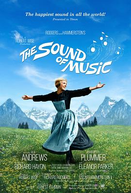

音乐之声 / The Sound of Music
影视 · 看过 · 2015-08-26 · 5 星
又名：仙乐飘飘处处闻(港) / 真善美(台) / 一个叛逆修女的故事

1965-03-02(美国) / 朱莉·安德鲁斯 / 克里斯托弗·普卢默 / 埃琳诺·帕克 / 理查德·海顿 / 佩吉·伍德 / 查尔敏·卡尔 / 希瑟·孟席斯-尤里克 / 尼古拉斯·哈蒙德 / 杜安·蔡斯 / 安吉拉·卡特怀特 / 美国 / 罗伯特·怀斯 / 174分钟 / 音乐之声 / 剧情 / 传记 / 爱情 / 歌舞 / 乔治·胡达勒克 George Hurdalek / 霍华德·林赛 Howard Lindsay / 拉塞尔·克劳斯 Russel Crouse / 恩斯特·莱赫曼 Ernest Lehman / Maria von Trapp / 英语 / 德语
太经典了，小学音乐课上至少看过5遍！！！音乐也太美妙了，孤独的牧羊人手风琴也拉过 _(:3」∠)_
作品信息
| 导演 | 罗伯特·怀斯 |
| 编剧 | 乔治·胡达勒克 / 霍华德·林赛 / 拉塞尔·克劳斯 / 恩斯特·莱赫曼 / 玛丽亚·冯·特拉普 |
| 主演 | 朱莉·安德鲁斯 / 克里斯托弗·普卢默 / 埃琳诺·帕克 / 理查德·海顿 / 佩吉·伍德 / 查尔敏·卡尔 / 希瑟·孟席斯-尤里克 / 尼古拉斯·哈蒙德 / 杜安·蔡斯 / 安吉拉·卡特怀特 / 黛比·特纳 / 基姆·卡拉思 / 安娜·李 / 波希娅·纳尔逊 / 本·怀特 / 丹尼尔·特鲁希特 / 诺玛·威登 / 吉尔克里斯特·斯图尔特 / 马妮·尼克松 / 埃瓦德妮·贝克 / 多丽丝·劳埃德 / 格特鲁德·阿斯特 / 弗兰克·贝克 / 史蒂夫·卡鲁瑟斯 / 山姆·哈里斯 / 多罗西·吉金斯 / 利奥达·理查德斯 / 杰弗里·塞尔 / 伯纳德·赛尔 / 诺尔曼·斯蒂凡斯 / 伯特史蒂文斯 / 玛丽亚·冯·特拉普 |
| 类型 | 剧情 / 爱情 / 歌舞 / 传记 |
| 制片国家/地区 | 美国 |
| 语言 | 英语 / 德语 |
| 上映日期 | 1965-03-02(美国) |
| 片长 | 174分钟 |
| IMDb | tt0059742 |
标签：爱情 · 音乐 · 美国 · 经典
最后一次看到是 2026-08-01T11:06:48+10:00 · 豆瓣原页